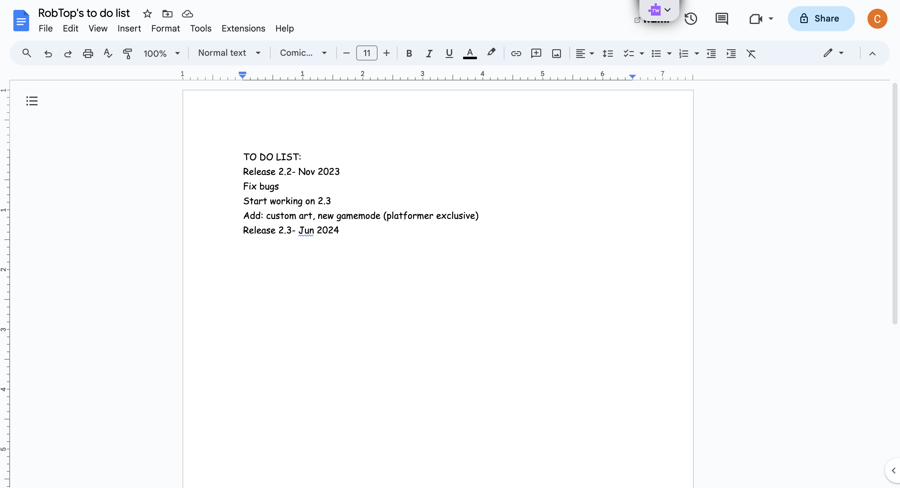

On October 15, Robert Topala, the man behind hit indie game Geometry Dash, accidentally leaked plans to release the major update "2.2" in November, a delay to the update, which was confirmed on August 13 to be releasing in October. The update information was deleted about an hour after it was leaked, but not before many angry users posted it to social media platform Reddit. Topala claims that he was trying to upload a picture of him at the gym, but accidentally uploaded a picture of his to-do list.

RobTop (Topala's nickname) has been working on update 2.2 since update 2.1 released on January 16, 2017. He has been working on 2.2 for nearly two-thirds of the time since the game released on August 13, 2023. The community of the game has been eagerly waiting, but I, a member of the community, can safely say that we are close to our breaking point. Topala, who hails from Sweden, says he also wishes he could release the update in October, but due to technical reasons, he has to wait until November. He actually has a history of pushing the update back, as if what he said a few years ago was correct, the update would have released over four years ago.
Many people have made beautiful works of art within Geometry Dash, and some say that they might not even need 2.2 to release. In fact, I have actually made great things within Geometry Dash, on my account BombCraftHTS. Of course, I am not the greatest artist within the game, however I am improving quickly and expect to release an extremely high-quality level in February 2024, and that part is not satire.